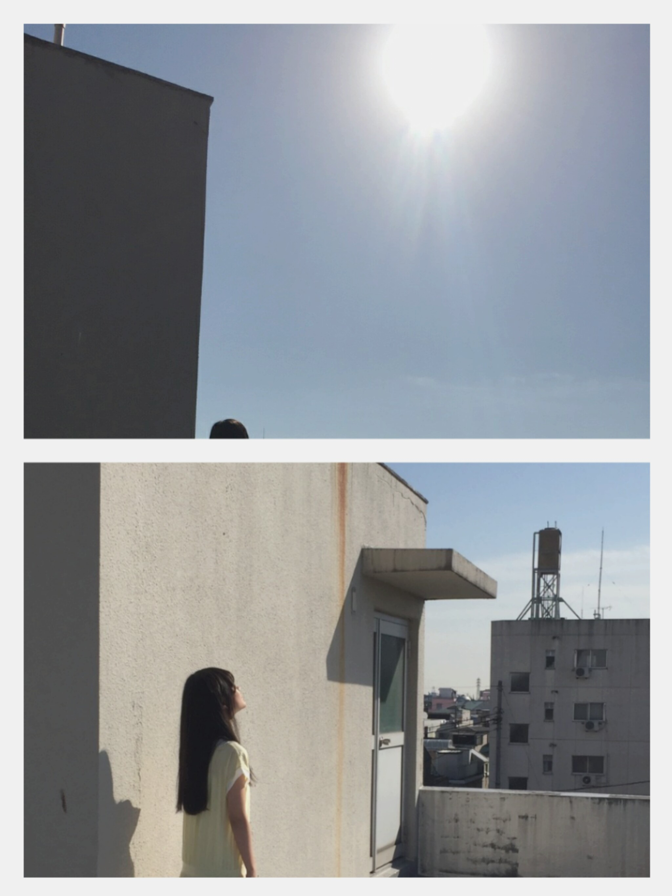
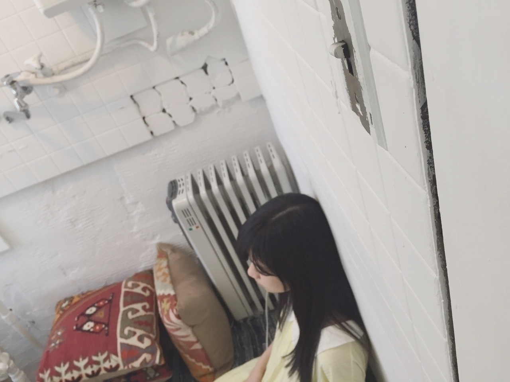
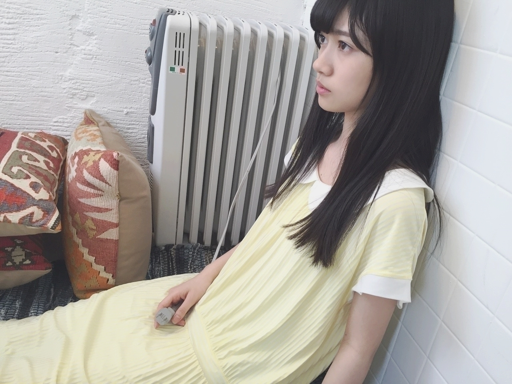
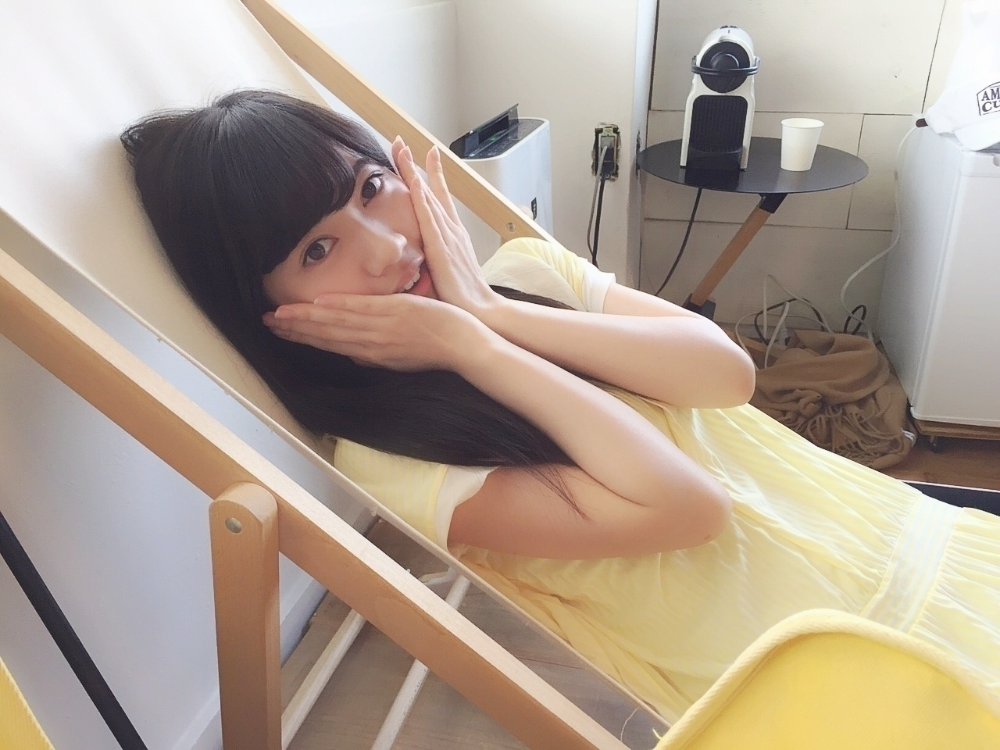

2016/0425Monプニちゃん
今回の題名
今のポケモン知ってる方なら絶対わかると思います
プニちゃんは光合成して生きるらしいです✨
可愛いプニちゃん✨
私も陽の光を浴びてみた

でも、あまり太陽とか
眩しいの
明るいの得意ではありません。
どちらかと言いますと
夕方とか日が落ちてきてからの方が落ち着きます。
おはようございます
こんにちは
こんばんは
らんぜの勢い
止まらんぜーーーーー
寺田蘭世です
宜しくお願い致します（´-`）
皆ー写真撮るよー
はいチーズ
カシャリ
お返事●
●眼球フェチってなに？目が好きってことかな？
▶そうですね
眼球です
絶対皆違うし
色とか白目と黒目の比率とかそういうのを見るのが好きなんです！
●暑いのか寒いのかわからん天気やね
▶やねー
お昼は暖かいけど
早朝とか夕方は冷えるよね
体調管理っ！
●今年、大学受験がんばるね！！！
その間もらんぜのことは応援してるからー！
終わるまで待ってて！笑
▶頑張って下さい
応援してます（´-`）
待ってるよ
いい結果も聞かせてね
●赤のお洋服買おうかな〜。蘭世の影響を受けて最近ずっと思ってるの
▶すごく嬉しいです
赤はいがいに使いやすいよ！
赤い靴とか凄く可愛いし
お洋服がカジュアル過ぎたら赤入れるだけで明るくなるし（´-`）
オススメです、、、
お試しあれ
●同い年のらんぜちゃんが頑張ってるところを見るとわたしももっと頑張ろうと思えます！
お互いがんばろうねー（＾Ｏ＾）☆
▶同い年
頑張ろうね！
●蘭世って自転車乗れないんだね ^ ^
▶はい
乗らなくても生きていけるなーっと思ったので
公園に行く事も無かったですし
あと、移動は車が好きなので
でも、最近になって
サイクリング？してみたい
風を切るって楽しそうだなっと自転車に興味が湧いてきてます✨
誰か教えて欲しい
●はじめての個握楽しかったよ
5月にまた行くねー
アルバムもとったし
早く蘭世に会いたいよー笑
▶この前来てくれたんですね
ありがとう✨
私も皆さんに早く会いたい
です
また会えたら会おうね
楽しみに待ってます（´-`）
そして、まあやさん
お誕生日おめでとうございます✨
当日にご連絡したら
まあやさんから可愛いお返事が返ってきたよ
皆には具体的な文はなんとなくヒミツにしておこう（´-`）
我はまあやさんの公式妹だよ。
そして、設楽さん
欅坂46の菜々香ちゃん
みんな同じ日✨
ちと、遅くなりますが
お誕生日おめでとうございます
同じ日
私と同じ日生まれの人いるかな？
9月23日ですちなみに
そういえばイジリーさんが同じ日だよね嬉しい（´-`）✨
アンダーライブ●
コメント欄で
アンダーライブのレポしてくれた人ありがとう！
ぜひ、まだレポしてない方やしたりない方が居たら
テラダのコメント欄にて
山形の千秋楽を見学してました！
凄くいい経験になりました
次のライブが楽しみ、、、
楽しみ過ぎる
メンバーのみんな
スタッフさん
お疲れ様でした
そして、ファンの皆さん
ありがとう！
寺田蘭世タオルとか
グッズ持ってる方がちらほら
申し訳ございません（´-`）
でも、すごく嬉しかった
ありがとね!
ちゃんとみてましたよ！
撮影：みりあたん
みりあ色々ありがとう！


ではっ

すやすや ... zzZ
おやすみなさい
2016/04/25 19:06


コメント(822)
写メ最高にかわいい … ！！
最近つかってる
化粧品おしえて〜〜！！
(設楽さんボイス)
ポケモン知ってることにおどろいたわ！ゲームしないと思ってた！めっちゃポケモンすき！！とくに水タイプ！！げーむけっこうする？
メールで知ったよ
もうケガは大丈夫？？
元気な蘭世が早く見たいよ！
蘭世がカメラ構えた写真に差し掛かった時に、ピースしてしまった^_^
蘭世の足の具合は良くなったかな？
これからも気をつけて頑張ってね(*^^*)
じゃ*･゜ﾟ･*:.｡..｡.:*･'(*ﾟ▽ﾟ*)'･*:.｡. .｡.:*･゜ﾟ･*
顔交換して下さい。白目
25歳男性より（笑）
私ね！人の食べてるところ見てるの好き笑笑
わかってくれるかなー？笑笑
人それぞれ噛む時間とかタイミングとかどの順番で食べるとか一口食べるまでに何回まばたきするかとか！笑笑
友達にはわかってもらえないんだけどね (´°̥̥̥̥̥̥̥̥ω°̥̥̥̥̥̥̥̥｀)
はいチーズに反応しちゃったでʬʬʬ
もう、蘭世様可愛すぎです。
赤い服が欲しい…笑
まずはアルバムいきますよ！でもね、アルバムって気軽に申し込めないよね、1枚の値段が。。あぁ。。
とりあえず待っててね♪
あと、捻挫は大丈夫なのかな??
お大事にね♡
眼球フェチかぁ…
今度握手会で目の評価してもらおっかな!!
またコメントするね！
「寺」のうちわをぶら下げて
握手会に参加してる者です！
Wi-Fi低速なのにブログありがとう！笑
アンダラ今回は怪我で参加できなかったけど
見学できたことで色々勉強になったのでは！？
東北シリーズはいけなかったけど
関東近県でやる機会あれば
絶対行くからね！
誕生日の話が出てたので！
俺の誕生日は5月4日だよ！
5月4日といえば？？？
京都で全握だね！！！
埼玉から行くよ〜〜！
もちろん祝ってくれるよね？？
では、楽しみに待ってます！
和⊿
捻挫は大丈夫？
2ndアルバムの2期生曲発表した＼(^o^)／
いつか2期生のMVも出て欲しいですね
これからも頑張って(/･ω･)/
蘭世可愛い(｡>﹏<｡)❤
毎週見てるー
ぷにちゃんも蘭世も最高！！！(๑>•̀๑)ﾃﾍﾍﾟﾛ
いやー今日も暑い...
体調どうですか？
無理してませんか？
カメラを持ってる写真は、カメラが大きいのか、
蘭世の顔が小さいのか...
まぁ後者だろうね(*´艸`*)ｳｼｼ
自分の誕生日は2月15日なんだけど、山崎邦正さんとかPerfumeのあ〜ちゃんさんとか同じみたい
蘭世の誕生日も祝うから、僕のも祝ってね？笑
夏のライブではテラダタオルを思いっきり振りまくります(隣の人に迷惑かからない程度に...)
見つけたら反応してね♪
今日も可愛らしいテラダ画像が増えたところで
これからも
蘭世の勢い、止まらんぜーーー
毎週見てるー
ぷにちゃんも蘭世も最高！！！(๑>•̀๑)ﾃﾍﾍﾟﾛ
牛乳飲んではやく捻挫なおしてねー！
ほんと応援してるよ！
なんで、弟なんだ！と悔しく思います…(笑)
ブログ更新ありがとう！
アンダラ見に行けなかった分、メンバーとファンの方々のコメント見て雰囲気を想像したよ( ˙-˙ )
行きたかったー、次は絶対行きます！
イジリーさんと同じ誕生日なんだね！運命！
僕もオリラジのあっちゃんと同じでなかなか運命感じちゃいます( ´_ゝ`)
蘭世はマイカメラとかありますか？
では！
アンダラ、いたんだね。
自分も山形、遠征したよ。
次のライブ、楽しく、臨もうね！
ブログありがとう！(*^_^*)☆
カメラが大きいのか、蘭世の顔が小さいのか(*´ー｀*)笑
わからんぜm(._.)m笑
同じく夕日の方が好き派です！(^^)
なんとなく落ち着きますね(*^^*)
アンダラ東北、アツいライブが続いてるようで！(*^_^*)
蘭世タオル最近、よく見かける気が(^-^)v
蘭世って字が目立つからかも(*´ー｀*)笑
とまらんぜ！！(*^_^*)☆
お久しぶりです！
最近忙しくて…
テラダさんポケモン見るんですね！
僕もこの歳ですが(どの歳だよ)アニメポケモン見てます
あっちなみに二十歳なりそうな人です
アンダラ九州に来たら必ず行きます！
ついでに握手会もお願いしたいです…
欲張りな人間⬅
では( ・∇・)ノ
捻挫は良くなってきてますかーー？？？
たくさん牛乳飲んではやく治してください！
神宮でがんばってるテラダさんがみたいです！
応援してます！！！
1日お疲れ様です(^ ^)
いやはや。今日も1日疲れたね(^ ^)(^ ^)
いや、まてまてまてと…。今日暑すぎるだろと笑
光合成する前に黒焦げになりそーやわ笑笑
光合成もほどほどにね(^ ^)
これからまた天気崩れそうです…。
体調に気おつけてね(^ ^)
それではとろけるカフェオレ(^ ^)
蘭世らポケモンが好きなの？(･∀･)
あと、自転車は最初のうちはコケる事も多いと思うから足治してからの方がいいと思うよ←
でっかいカメラ。
捻挫を治して、ステージに戻らないとね。
みんな待ってるよ。
鍛えてる？
アカレンジャーがいないと寂しいよ。
一度あなたに瞳をじっくり観察されたい。
ブログ更新ありがとうございます！
ポケモンとかルビー、サファイア以来やってないから
最近のは全然わかんないや( ´ｰ`)
てことでプニちゃんググりました笑
ジガルデていうポケモンの愛称であってますかね。。。
まぁかわいいですね笑ぬいぐるみほしいです笑
カメラマン蘭世かわいい！
カメラがでかいのか蘭世の顔が小さいのか。。。笑
赤色はいいですよね！！
僕も靴下とかに赤さし色でいれてます。使いやすいです
ではまた
らんぜのいきおいとまらんぜー！！！！
あとなんでみり愛が撮った写真でコンセント持ってるの？？笑
確かに高い太陽って陽射しが強くて倒れそうになるわ…（笑）
おやしゅみなしゃ～～い❤
そういえば、1回だけ蘭世の口から「おやしゅみなしゃい」聞きたい＼(^o^)／笑
これからも頑張って(/･ω･)/
東北は無念としか言えないけど、東北はライブでらんぜの帰りを待ってるよ！！想いはまだ強く持って！！
アルバムでらんぜの個握ゲットしたからまたいくね～(^^♪
質問：らんぜは光合成するの？
らんぜ超絶かわいい～～～～～～～（*^_^*）
あ、アルバムの二期生オンリーの楽曲おめでとう(*^^)v
プニちゃんって緑の可愛いポケモンだよね（笑）
蘭世ポケモン見てそうなイメージあったから何か嬉しい（笑）
桜もすっかり散って学校生活も落ち着いてきたところだから何か人の役に立つことでもしたいな！
わずかだけど熊本に支援物資を送りたい！
早く熊本の人の笑顔がみたいね！
あつき
らんぜ顔が小さすぎて、カメラがでっかく見えるよ(笑)
今のポケモン全然わかんないんだけど、プニちゃんって名前可愛いね！
らんぜはプニちゃん推し？
めちゃ会いたかったー！
けど同じ空間にいれたことがすごく嬉しかった！
蘭世の体めいいっぱい使ったダンスすごく好きだからさ
次のライブのとき楽しみにしてるね♪
足だいぶよくなってきたのかな？
あとポケモン好きだったの!?わら
僕は蘭世の眼球が好きだわ
笑
コメントする